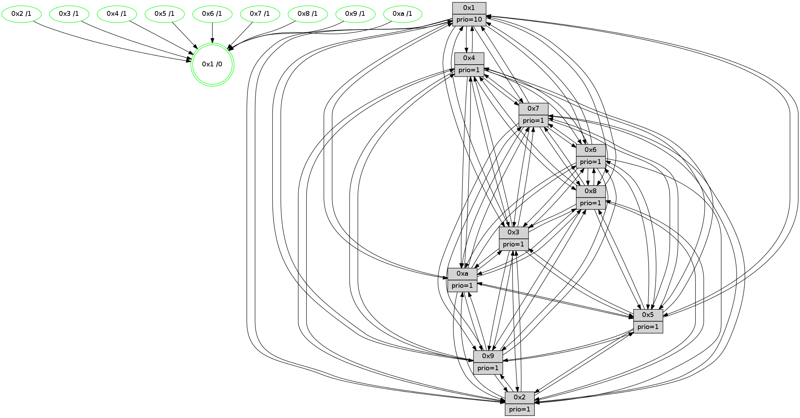

>> << IDX [start] -100 -25 -5 +0 +5 +25 +100 [1410.39488602]
 Previous packets
1405.001435 [STC(3)->1 #0.241 tree-change,inconsistent-stability,stable,to-color d=1]
1405.003376 [STC(2)->1 #0.241 tree-change,inconsistent-stability,stable,to-color d=1]
1405.004989 [Color(3) seq=525 @0:0 prio=1]
1405.008032 [Color(2) seq=472 @0:0 prio=1]
----------------------------------------------------------------------
1405.666105 beacon01(faad) #0 coord=01,02,03,04,05,06,07,0a,09,08 cycle=688.0ms assoc
-- color-indic=1 64 56 95
1405.676087 beacon02(faad) #0 coord=01,02,03,04,05,06,07,0a,09,08 cycle=688.0ms assoc 64 c5 a4
1405.686087 beacon03(faad) #0 coord=01,02,03,04,05,06,07,0a,09,08 cycle=688.0ms assoc 64 bf e9
1405.696089 beacon04(faad) #0 coord=01,02,03,04,05,06,07,0a,09,08 cycle=688.0ms assoc 64 c8 03
1405.706086 beacon05(faad) #0 coord=01,02,03,04,05,06,07,0a,09,08 cycle=688.0ms assoc 64 b2 4e
1405.716088 beacon06(faad) #0 coord=01,02,03,04,05,06,07,0a,09,08 cycle=688.0ms assoc 64 3c 99
1405.726088 beacon07(faad) #0 coord=01,02,03,04,05,06,07,0a,09,08 cycle=688.0ms assoc 64 46 d4
1405.736092 beacon0a(faad) #0 coord=01,02,03,04,05,06,07,0a,09,08 cycle=688.0ms assoc 64 37 df
1405.756092 beacon08(faad) #0 coord=01,02,03,04,05,06,07,0a,09,08 cycle=688.0ms assoc 64 c3 45
1405.768918 [Hello(10): seq=829 sym=6,2,3,8,7,5,9,4,1 sysInfo=hasWarning stat=6:15,14,2,4/2:12,6,6,0/3:2,4,10,15/8:14,3,2,3/7:5,10,0,9/5:6,8,14,1/9:4,7,3,1/4:10,3,12,2/1:5,3,3,1]
1405.771715 [Hello(8): seq=840 sym=5,2,3,7,9,6,4,10,1 sysInfo=hasWarning stat=5:0,6,8,1/2:7,5,15,12/3:1,6,5,4/7:12,2,3,1/9:3,12,9,5/6:6,5,0,0/4:8,15,4,1/10:15,9,15,5/1:4,11,8,0]
1405.774460 [Color(1) seq=576 @0:0 prio=10]
1405.776342 [Hello(4): seq=896 sym=5,8,6,2,3,9,7,10,1 sysInfo= stat=5:15,2,9,2/8:1,4,1,0/6:7,12,0,15/2:1,12,8,1/3:6,8,2,15/9:13,0,15,2/7:10,2,1,0/10:8,10,2,14/1:15,3,7,1]
1405.779476 [Color(4) seq=435 @0:0 prio=1]
1405.783107 [Hello(9): seq=840 sym=2,5,3,4,7,6,8,10,1 sysInfo=hasWarning stat=2:13,2,1,11/5:13,3,2,8/3:14,5,11,4/4:7,1,6,2/7:5,9,9,4/6:13,8,15,14/8:3,7,6,6/10:8,10,3,0/1:7,3,7,1]
1405.786022 [Color(8) seq=495 @0:0 prio=1]
1405.788219 [Color(5) seq=443 @0:0 prio=1]
1405.790811 [Hello(7): seq=896 sym=2,3,5,6,4,8,9,10,1 sysInfo=hasWarning stat=2:12,11,7,4/3:4,2,11,3/5:2,5,12,3/6:1,14,8,12/4:2,15,9,1/8:2,4,1,0/9:10,4,9,2/10:4,1,1,7/1:11,13,4,0]
1405.794593 [Color(7) seq=424 @0:0 prio=1]
----------------------------------------------------------------------
1406.454235 beacon01(faad) #0 coord=01,02,03,04,05,06,07,0a,09,08 cycle=688.0ms assoc
-- color-indic=1 64 92 9b
1406.464217 beacon02(faad) #0 coord=01,02,03,04,05,06,07,0a,09,08 cycle=688.0ms assoc 64 01 aa
1406.474218 beacon03(faad) #0 coord=01,02,03,04,05,06,07,0a,09,08 cycle=688.0ms assoc 64 7b e7
1406.484218 beacon04(faad) #0 coord=01,02,03,04,05,06,07,0a,09,08 cycle=688.0ms assoc 64 0c 0d
1406.494217 beacon05(faad) #0 coord=01,02,03,04,05,06,07,0a,09,08 cycle=688.0ms assoc 64 76 40
1406.504218 beacon06(faad) #0 coord=01,02,03,04,05,06,07,0a,09,08 cycle=688.0ms assoc 64 f8 97
1406.514219 beacon07(faad) #0 coord=01,02,03,04,05,06,07,0a,09,08 cycle=688.0ms assoc 64 82 da
1406.524225 beacon0a(faad) #0 coord=01,02,03,04,05,06,07,0a,09,08 cycle=688.0ms assoc 64 f3 d1
1406.544224 beacon08(faad) #0 coord=01,02,03,04,05,06,07,0a,09,08 cycle=688.0ms assoc 64 07 4b
1406.556129 [Hello(1): seq=806 sym=4,2,9,5,10,3,8,6,7 sysInfo=coloring-mode-on,ColoringModeRequestCalled stat=4:7,7,10,3/2:7,12,3,5/9:8,15,5,2/5:9,2,7,9/10:8,1,6,8/3:10,7,6,11/8:4,13,5,3/6:14,3,3,1/7:6,2,11,1]
1406.559628 [Color(10) seq=486 @0:0 prio=1]
1406.561282 [Color(9) seq=456 @0:0 prio=1]
1406.562881 [Hello(6): seq=897 sym=3,2,5,4,7,9,8,10,1 sysInfo=hasWarning stat=3:0,3,1,0/2:3,4,1,0/5:11,14,6,4/4:4,6,10,8/7:9,7,6,15/9:12,9,15,11/8:3,13,15,6/10:4,14,7,13/1:7,5,7,1]
1406.565937 [Hello(3): seq=897 sym=1,7,6,2,4,8,9,10,5 sysInfo=hasWarning stat=1:1,14,11,0/7:1,4,12,14/6:15,7,6,1/2:5,1,1,2/4:9,13,15,13/8:8,4,6,5/9:6,8,11,1/10:11,3,1,5/5:3,10,14,1]
1406.568745 [Color(3) seq=526 @0:0 prio=1]
1406.571608 [Color(6) seq=529 @0:0 prio=1]
1406.574933 [Hello(5): seq=897 sym=7,6,4,3,1,9,8,10,2 sysInfo=hasWarning stat=7:2,12,14,0/6:5,10,13,4/4:6,2,6,15/3:8,5,10,2/1:13,3,10,0/9:6,2,0,11/8:3,9,4,4/10:6,15,4,9/2:12,6,10,7]
1406.581134 [Hello(2): seq=893 sym=4,5,7,3,9,8,10,1 asym=6 sysInfo=hasWarning stat=4:14,8,8,13/5:11,3,0,3/7:13,5,11,1/3:3,4,1,0/9:3,11,8,10/8:15,4,5,12/10:13,2,6,11/1:12,3,2,0/6:12,1,7,1]
1406.584982 [Color(2) seq=473 @0:0 prio=1]
----------------------------------------------------------------------
1407.242365 beacon01(faad) #0 coord=01,02,03,04,05,06,07,0a,09,08 cycle=688.0ms assoc
-- color-indic=1 64 2e 9e
1407.252348 beacon02(faad) #0 coord=01,02,03,04,05,06,07,0a,09,08 cycle=688.0ms assoc 64 bd af
1407.262347 beacon03(faad) #0 coord=01,02,03,04,05,06,07,0a,09,08 cycle=688.0ms assoc 64 c7 e2
1407.272347 beacon04(faad) #0 coord=01,02,03,04,05,06,07,0a,09,08 cycle=688.0ms assoc 64 b0 08
1407.282347 beacon05(faad) #0 coord=01,02,03,04,05,06,07,0a,09,08 cycle=688.0ms assoc 64 ca 45
1407.292349 beacon06(faad) #0 coord=01,02,03,04,05,06,07,0a,09,08 cycle=688.0ms assoc 64 44 92
1407.302348 beacon07(faad) #0 coord=01,02,03,04,05,06,07,0a,09,08 cycle=688.0ms assoc 64 3e df
1407.312352 beacon0a(faad) #0 coord=01,02,03,04,05,06,07,0a,09,08 cycle=688.0ms assoc 64 4f d4
1407.332354 beacon08(faad) #0 coord=01,02,03,04,05,06,07,0a,09,08 cycle=688.0ms assoc 64 bb 4e
1407.343580 [Hello(9): seq=841 sym=2,5,3,4,7,6,8,10,1 sysInfo=hasWarning stat=2:14,3,1,11/5:14,4,2,8/3:15,6,11,4/4:7,1,6,2/7:6,10,9,4/6:14,9,15,14/8:3,8,6,6/10:8,10,3,0/1:8,3,7,1]
1407.347520 [Color(5) seq=444 @0:0 prio=1]
1407.349157 [Hello(10): seq=830 sym=6,2,3,8,7,5,9,4,1 sysInfo=hasWarning stat=6:0,15,2,4/2:13,7,6,0/3:3,5,10,15/8:15,4,2,3/7:6,11,0,9/5:7,9,14,1/9:5,8,3,1/4:11,4,12,2/1:6,4,3,1]
1407.355336 [Hello(8): seq=841 sym=5,2,3,7,9,6,4,10,1 sysInfo=hasWarning stat=5:1,7,8,1/2:8,6,15,12/3:2,7,5,4/7:13,3,3,1/9:3,13,9,5/6:7,6,0,0/4:8,15,4,1/10:0,10,15,5/1:5,11,8,0]
1407.358834 [Hello(4): seq=897 sym=5,8,6,2,3,9,7,10,1 sysInfo= stat=5:0,3,9,2/8:1,5,1,0/6:8,13,0,15/2:2,13,8,1/3:7,9,2,15/9:14,1,15,2/7:11,3,1,0/10:9,11,2,14/1:0,3,7,1]
1407.362308 [Color(4) seq=436 @0:0 prio=1]
1407.364541 [Hello(7): seq=897 sym=2,3,5,6,4,8,9,10,1 sysInfo=hasWarning stat=2:13,12,7,4/3:5,3,11,3/5:3,5,12,3/6:2,15,8,12/4:2,15,9,1/8:2,4,1,0/9:10,5,9,2/10:5,2,1,7/1:12,13,4,0]
1407.367381 [Color(7) seq=425 @0:0 prio=1]
1407.370094 [Color(8) seq=496 @0:0 prio=1]
----------------------------------------------------------------------
1408.030495 beacon01(faad) #0 coord=01,02,03,04,05,06,07,0a,09,08 cycle=688.0ms assoc
-- color-indic=1 64 1a 86
1408.040478 beacon02(faad) #0 coord=01,02,03,04,05,06,07,0a,09,08 cycle=688.0ms assoc 64 89 b7
1408.050477 beacon03(faad) #0 coord=01,02,03,04,05,06,07,0a,09,08 cycle=688.0ms assoc 64 f3 fa
1408.060477 beacon04(faad) #0 coord=01,02,03,04,05,06,07,0a,09,08 cycle=688.0ms assoc 64 84 10
1408.070477 beacon05(faad) #0 coord=01,02,03,04,05,06,07,0a,09,08 cycle=688.0ms assoc 64 fe 5d
1408.080479 beacon06(faad) #0 coord=01,02,03,04,05,06,07,0a,09,08 cycle=688.0ms assoc 64 70 8a
1408.090479 beacon07(faad) #0 coord=01,02,03,04,05,06,07,0a,09,08 cycle=688.0ms assoc 64 0a c7
1408.100485 beacon0a(faad) #0 coord=01,02,03,04,05,06,07,0a,09,08 cycle=688.0ms assoc 64 7b cc
1408.120483 beacon08(faad) #0 coord=01,02,03,04,05,06,07,0a,09,08 cycle=688.0ms assoc 64 8f 56
1408.132642 [Hello(1): seq=807 sym=4,2,9,5,10,3,8,6,7 sysInfo=coloring-mode-on,ColoringModeRequestCalled stat=4:8,8,10,3/2:8,13,3,5/9:9,0,5,2/5:10,2,7,9/10:9,2,6,8/3:11,8,6,11/8:5,14,5,3/6:15,4,3,1/7:7,3,11,1]
1408.135762 [STC(1) #0.242 tree-change,inconsistent-stability,stable,to-color d=0]
1408.137850 [Hello(3): seq=898 sym=1,7,6,2,4,8,9,10,5 sysInfo=hasWarning stat=1:2,15,11,0/7:2,5,12,14/6:15,8,6,1/2:6,2,1,2/4:10,14,15,13/8:9,5,6,5/9:7,8,11,1/10:12,3,1,5/5:4,10,14,1]
1408.142109 [Color(10) seq=487 @0:0 prio=1]
1408.144148 [Hello(2): seq=894 sym=4,5,7,3,9,8,10,1 asym=6 sysInfo=hasWarning stat=4:15,9,8,13/5:11,3,0,3/7:14,6,11,1/3:3,4,1,0/9:4,11,8,10/8:0,5,5,12/10:14,2,6,11/1:13,3,2,0/6:12,1,7,1]
1408.147719 [Hello(6): seq=898 sym=3,2,5,4,7,9,8,10,1 sysInfo=hasWarning stat=3:0,3,1,0/2:4,5,1,0/5:12,15,6,4/4:5,7,10,8/7:10,8,6,15/9:13,9,15,11/8:4,14,15,6/10:5,14,7,13/1:8,5,7,1]
1408.152271 [Color(2) seq=474 @0:0 prio=1]
1408.157019 [Color(9) seq=457 @0:0 prio=1]
1408.158360 [Color(3) seq=527 @0:0 prio=1]
1408.160202 [Color(6) seq=530 @0:0 prio=1]
----------------------------------------------------------------------
1408.818625 beacon01(faad) #0 coord=01,02,03,04,05,06,07,0a,09,08 cycle=688.0ms assoc
-- color-indic=1 64 a6 83
1408.828608 beacon02(faad) #0 coord=01,02,03,04,05,06,07,0a,09,08 cycle=688.0ms assoc 64 35 b2
1408.838611 beacon03(faad) #0 coord=01,02,03,04,05,06,07,0a,09,08 cycle=688.0ms assoc 64 4f ff
1408.848608 beacon04(faad) #0 coord=01,02,03,04,05,06,07,0a,09,08 cycle=688.0ms assoc 64 38 15
1408.858609 beacon05(faad) #0 coord=01,02,03,04,05,06,07,0a,09,08 cycle=688.0ms assoc 64 42 58
1408.868609 beacon06(faad) #0 coord=01,02,03,04,05,06,07,0a,09,08 cycle=688.0ms assoc 64 cc 8f
1408.878609 beacon07(faad) #0 coord=01,02,03,04,05,06,07,0a,09,08 cycle=688.0ms assoc 64 b6 c2
1408.888613 beacon0a(faad) #0 coord=01,02,03,04,05,06,07,0a,09,08 cycle=688.0ms assoc 64 c7 c9
1408.908613 beacon08(faad) #0 coord=01,02,03,04,05,06,07,0a,09,08 cycle=688.0ms assoc 64 33 53
1408.919605 [STC(6)->1 #0.242 tree-change,inconsistent-stability,stable,to-color d=1]
1408.920867 [STC(3)->1 #0.242 tree-change,inconsistent-stability,stable,to-color d=1]
1408.924220 [STC(2)->1 #0.242 tree-change,inconsistent-stability,stable,to-color d=1]
1408.925987 [Hello(7): seq=898 sym=2,3,5,6,4,8,9,10,1 sysInfo=hasWarning stat=2:14,13,7,4/3:6,4,11,3/5:3,5,12,3/6:3,0,8,12/4:2,15,9,1/8:2,5,1,0/9:11,6,9,2/10:5,3,1,7/1:13,13,5,0]
1408.928834 [Color(1) seq=578 @0:0 prio=10]
1408.930058 [Color(5) seq=445 @0:0 prio=1]
1408.932460 [STC(7)->1 #0.242 tree-change,inconsistent-stability,stable,to-color d=1]
1408.933982 [Hello(9): seq=842 sym=2,5,3,4,7,6,8,10,1 sysInfo=hasWarning stat=2:14,3,1,11/5:14,5,2,8/3:15,7,11,4/4:8,2,6,2/7:7,11,9,4/6:14,10,15,14/8:4,9,6,6/10:9,10,3,0/1:9,3,7,1]
1408.936706 [Hello(10): seq=831 sym=6,2,3,8,7,5,9,4,1 sysInfo=hasWarning stat=6:1,0,2,4/2:14,8,6,0/3:3,6,10,15/8:0,5,2,3/7:7,12,0,9/5:7,9,14,1/9:5,9,3,1/4:12,5,12,2/1:7,4,3,1]
1408.940790 [Hello(4): seq=898 sym=5,8,6,2,3,9,7,10,1 sysInfo= stat=5:0,4,9,2/8:1,6,1,0/6:9,14,0,15/2:3,14,8,1/3:8,10,2,15/9:15,2,15,2/7:12,4,1,0/10:9,12,2,14/1:1,3,8,1]
1408.943677 [Hello(8): seq=842 sym=5,2,3,7,9,6,4,10,1 sysInfo=hasWarning stat=5:1,8,8,1/2:9,6,15,12/3:3,8,5,4/7:13,3,3,1/9:4,14,9,5/6:8,7,0,0/4:8,15,4,1/10:0,11,15,5/1:6,11,9,0]
1408.947129 [STC(8)->1 #0.242 tree-change,inconsistent-stability,stable,to-color d=1]
1408.950055 [Color(8) seq=497 @0:0 prio=1]
1408.953303 [STC(4)->1 #0.242 tree-change,inconsistent-stability,stable,to-color d=1]
1408.954821 [TreeStatus(7)-.->1 #0.242 tree-change,inconsistent-stability,stable child=1]
1408.957943 [Color(7) seq=426 @0:0 prio=1]
1408.959564 [TreeStatus(4)-.->1 #0.242 tree-change,inconsistent-stability,stable child=1]
1408.962361 [Color(4) seq=437 @0:0 prio=1]
----------------------------------------------------------------------
1409.606756 beacon01(faad) #0 coord=01,02,03,04,05,06,07,0a,09,08 cycle=688.0ms assoc
-- color-indic=1 64 62 8d
1409.616740 beacon02(faad) #0 coord=01,02,03,04,05,06,07,0a,09,08 cycle=688.0ms assoc 64 f1 bc
1409.626739 beacon03(faad) #0 coord=01,02,03,04,05,06,07,0a,09,08 cycle=688.0ms assoc 64 8b f1
1409.636739 beacon04(faad) #0 coord=01,02,03,04,05,06,07,0a,09,08 cycle=688.0ms assoc 64 fc 1b
1409.646739 beacon05(faad) #0 coord=01,02,03,04,05,06,07,0a,09,08 cycle=688.0ms assoc 64 86 56
1409.656740 beacon06(faad) #0 coord=01,02,03,04,05,06,07,0a,09,08 cycle=688.0ms assoc 64 08 81
1409.666739 beacon07(faad) #0 coord=01,02,03,04,05,06,07,0a,09,08 cycle=688.0ms assoc 64 72 cc
1409.676743 beacon0a(faad) #0 coord=01,02,03,04,05,06,07,0a,09,08 cycle=688.0ms assoc 64 03 c7
1409.696744 beacon08(faad) #0 coord=01,02,03,04,05,06,07,0a,09,08 cycle=688.0ms assoc 64 f7 5d
1409.708015 [Hello(1): seq=808 sym=4,2,9,5,10,3,8,6,7 sysInfo=coloring-mode-on,ColoringModeRequestCalled stat=4:9,9,11,4/2:9,14,3,5/9:10,1,5,2/5:10,3,7,9/10:10,3,6,8/3:12,9,7,11/8:6,15,6,3/6:0,5,4,1/7:7,4,12,2]
1409.713021 [Hello(6): seq=899 sym=3,2,5,4,7,9,8,10,1 sysInfo=hasWarning stat=3:0,3,2,0/2:4,5,2,0/5:12,0,6,4/4:6,8,11,9/7:11,9,7,0/9:14,9,15,11/8:5,15,0,6/10:6,14,7,13/1:9,6,8,1]
1409.716153 [Color(6) seq=531 @0:0 prio=1]
1409.717479 [Color(9) seq=458 @0:0 prio=1]
1409.722272 [Hello(2): seq=895 sym=4,5,7,3,9,8,10,1 sysInfo=hasWarning stat=4:0,10,9,14/5:11,4,0,3/7:15,7,12,2/3:3,5,1,0/9:5,12,8,10/8:1,6,6,12/10:15,2,6,11/1:14,4,3,0]
1409.724879 [Color(10) seq=488 @0:0 prio=1]
1409.726884 [Color(2) seq=475 @0:0 prio=1]
1409.729195 [Hello(5): seq=899 sym=7,6,4,3,1,9,8,10,2 sysInfo=hasWarning stat=7:3,14,15,1/6:5,11,14,4/4:8,4,7,0/3:8,6,11,2/1:13,3,10,0/9:8,3,0,11/8:5,11,5,4/10:8,15,4,9/2:13,7,10,7]
1409.733933 [Hello(3): seq=899 sym=1,7,6,2,4,8,9,10,5 sysInfo=hasWarning stat=1:3,0,12,0/7:3,6,13,15/6:15,9,6,1/2:6,2,2,2/4:11,15,0,14/8:10,6,7,5/9:8,8,11,1/10:13,3,1,5/5:4,11,14,1]
1409.738041 [Color(3) seq=528 @0:0 prio=1]